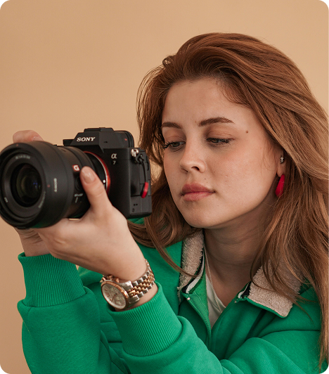

Sobre Mim
Olá! Sou Joana Santos, uma fotógrafa apaixonada por capturar momentos únicos e transformá-los em memórias eternas. Com mais de 5 anos de experiência, especializo-me em fotografia de retratos, eventos e lifestyle.
Minha jornada na fotografia começou como um hobby, mas rapidamente se tornou minha paixão e profissão. Acredito que cada pessoa tem uma história única para contar, e é através da minha lente que ajudo a eternizar esses momentos especiais.
Minhas Especialidades
- Fotografia de Retratos
- Fotografia de Casamentos
- Fotografia de Eventos
- Fotografia Lifestyle
